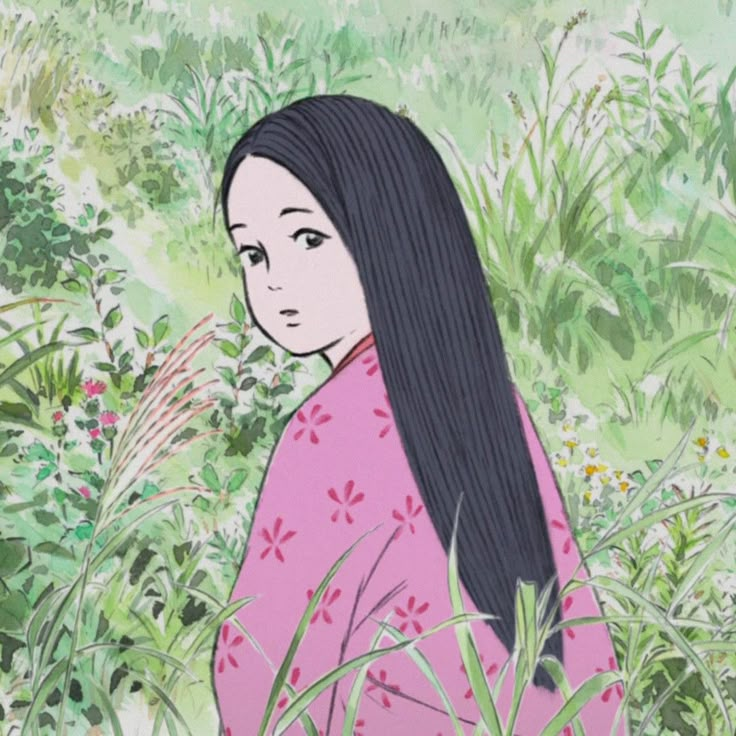
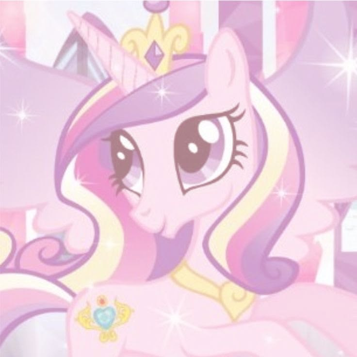
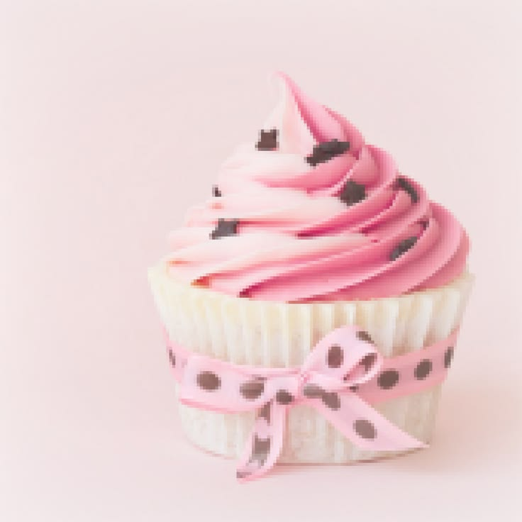

My name is Ashanti. I was born in Guadalajara, but I live in Oceanside, CA! I was born on April 16, 2009. I have a younger sister who I consider to be my best friend. One of my hobbies is running, as I'm part of my school's cross country and track team.
Im relatively new to web design, so the part I need the most help on is the code but I good at knowing how I want my layout to be like I took a graphic design course, and from what I learned is that I prefer using Adobe Illustrator over Photoshop. My favorite type of projects are flyers and logo icons. I have used these skills to create flyers for the Young Leaders in Healthcare club at my school!
I really love watching movies and logging them on Letterboxd. My favorite movies are The Tale of the Princess Kaguya, Uptown Girls, and Drop Dead Gorgeous.
Some movies I recently went to watch in theaters were La La Land and Toy Story 5.
Some of My Favorite Things ♡



Want to try baking cupcakes yourself? Click here for a vanilla cupcake recipe! 🧁
Fun Facts
- Show: My Little Pony
- Food: Poke Bowl
- Game: Roblox
- Dessert: Cupcakes
- Artist: Laufey